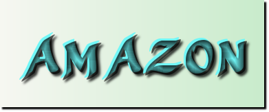
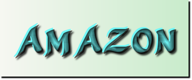
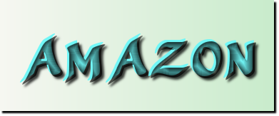
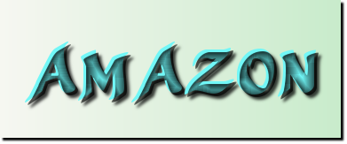

 

Facebook este un site web de tip rețea de socializare din Internet, creat de către Mark Zuckerberg în anul 2004. În acest moment Facebook este una dintre cele mai răspândite rețele sociale din lume. Utilizatorii pot intra în această rețea din orice loc unde există acces la Internet pe baza unei parole, stabilite inițial odată cu completarea formularului de înscriere conținând o serie întreagă de întrebări personale. În prezent (noiembrie 2015) site-ul Facebook are circa 1.44 mild. membri în toată lumea. Apreciat a fi al doilea site social mondial după google.com, luat după numărul de vizite, Facebook face parte din fenomenul recent denumit Web 2.0. Creat inițial la Harvard, SUA, Facebook era la origine o rețea socială cu circuit închis pentru studenții acestei universități; ulterior ea s-a deschis și altor universități americane. La început verificarea apartenenței la universitate se făcea prin adresa de poștă electronică (e-mail) a studentului, dar începând din septembrie 2006 rețeaua este deschisă tuturor. Imediat rețeaua Facebook a devenit foarte populară dar și controversată, fiind interzisă în câteva țări din Orientul Mijlociu.
În primele nouă luni din anul 2010 Facebook a înregistrat un profit net de 355 de milioane de dolari la venituri de 1,2 miliarde de dolari.
În România, Facebook avea 0,5 milioane de utilizatori în ianuarie 2010 și 2,4 milioane în ianuarie 2011. În septembrie 2011 România avea peste 3,7 milioane de utilizatori de Facebook.
IstorieÎn februarie 2004 Mark Zuckerberg a fondat rețeaua „The Facebook”, având la început denumirea „thefacebook.com”. Facebook, lansată inițial ca o rețea universitară, a fost extinsă apoi angajaților unor companii ca Apple și Microsoft.
NoteFacebook Note a fost introdus pe 22 august 2006, o caracteristică de blogging care permite etichete și imagini incorporate. Utilizatorii au putut mai târziu să importe bloguri din Xanga, LiveJournal, Blogger, și alte servicii de blogging.
ChatPe 7 aprilie 2008, Facebook a lansat o aplicație pe bază de mesagerie instantanee Comet denumită „Chat”, care permite utilizatorilor să comunice cu prietenii și este similară în funcționalitate cu mesageria instant folosită de calculatoare.
Gifts (Cadouri)Facebook a lansat Gifts (Cadouri) pe 8 februarie 2007, permițând utilizatorilor să trimită cadouri virtuale pentru prietenii lor din profil. Cadouri costă 1,00 dolari fiecare, și un mesaj personalizat poate fi atașat la fiecare cadou.
MarketplacePe 14 mai 2007, Facebook a lansat Marketplace, care permite utilizatorilor să posteze anunțuri gratuite. deocamdată Marketplace este suportat doar pentru anunțuri din SUA, Canada, Marea Britanie, Irlanda, India, și Australia. Marketplace a fost comparat cu Craigslist de CNET, care arată că diferența majoră dintre cele două este că anunțurile postate de un utilizator pe piață sunt văzute doar de către utilizatorii din aceeași rețea ca și utilizatorul, în timp ce anunțuri postate pe Craiglist pot fi văzute de către oricine.
MesajeO noua platforma de mesagerie, cu nume de cod „Project Titan”, a fost lansată pe 15 noiembrie 2010 Descrisă ca un „concurent Gmail” de unele publicații, sistemul permite utilizatorilor să comunice direct între ei, prin intermediul Facebook, folosind mai multe metode diferite (inclusiv o adresă specială de e-mail, mesaje text, sau prin intermediul site-ului Facebook sau aplicații mobile) - indiferent de metoda folosită pentru a transmite un mesaj, ele sunt cuprinse în subiecte unice într-un inbox unificat. Ca și la alte caracteristici Facebook, utilizatorii pot seta de la cine pot primi mesaje, doar de la prieteni, prieteni ai prietenilor, sau de la oricine. Serviciul de e-mail a fost reziliat în 2014 din cauza absorbției scăzute.
În afară de site-ul Facebook, mesajele pot fi accesate prin aplicații mobile ale site-ului, sau o aplicație dedicată de Facebook Messenger.
Apeluri vocaleDin aprilie 2011, utilizatorii Facebook au avut posibilitatea de a efectua apeluri de voce în direct prin intermediul Facebook Chat, permițând utilizatorilor să converseze cu alții din întreaga lume. Această caracteristică, care este oferit gratuit prin intermediul noului serviciu Bobsled de la T-Mobile, permite utilizatorului să folosească vocea la actualul Facebook Chat, precum și să poată lăsa mesaje vocale pe Facebook.
Apeluri videoPe 6 iulie 2011, Facebook a lansat serviciile de apeluri video prin Skype ca partener de tehnologie. Acesta permite apelări bilaterale prin intermediul unui Rest API de la Skype.
Vizualizare videoÎn septembrie 2014, Facebook a anunțat că sunt 1 miliard de vizualizări video pe zi, și că va permite accesul public la contoarele de vizualizare ale clipurilor video publicate de utilizatori, pagini, și personalități publice. De asemenea, a confirmat că va recomanda videoclipuri suplimentare pentru utilizatori după ce aceștia au vizionat un clip video. 65 % din vizualizările video pe Facebook sunt de pe telefonul mobil unde baza de utilizatori Facebook se comută în prezent, vizualizările crescând cu 50 la sută din mai până în iulie, în parte datorită modei virale Ice Bucket Challenge (Provocarea găleții cu gheață) găsirea unui acasă pe Facebook a asociației ALS, care s-a dezvoltat în primul rând pe Facebook.